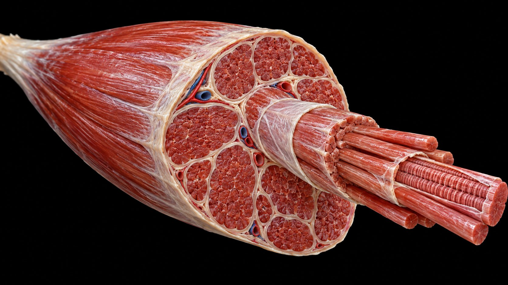
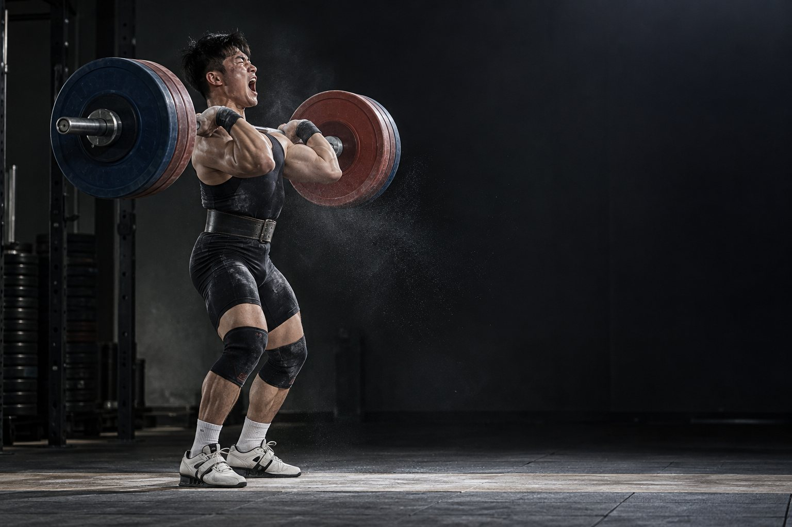
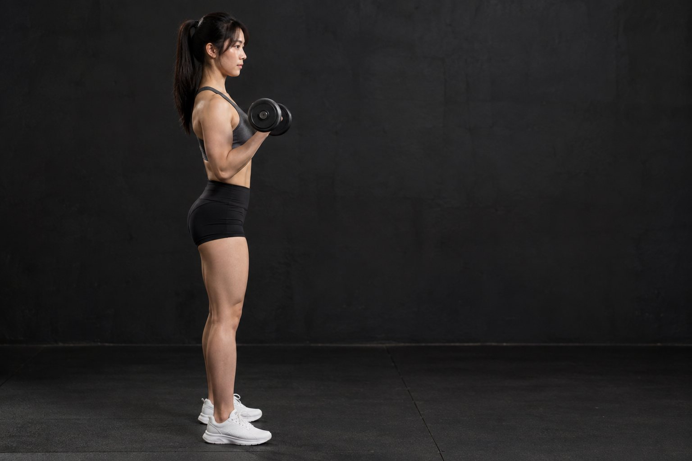
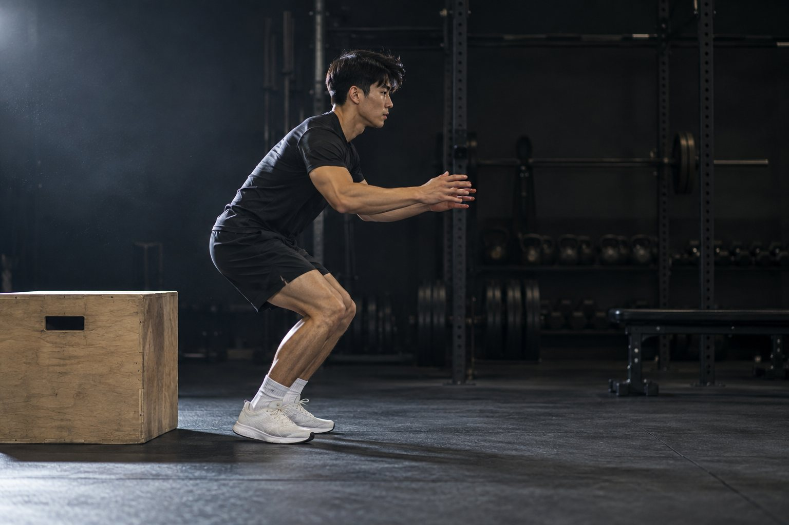

체육 임용 대비 · 운동생리학
운동과 신경근 생리
근육은 어떻게 힘을 내고, 신경은 어떻게 조절하나 — 13년 기출 핵심만
사진·영상: AI 생성 이미지
기출 지도
13년 중 11년 출제, 12문항 — 근섬유 유형·수축 형태가 최다
2014 A10근력 조절 — 동원 수 · 발화 빈도
2015 A6근수축 과정 순서 · Type I
2016 A7지연성 근통증(DOMS)
2017 B4근비대 · 플라이오메트릭 · 신장-단축
2018 B6근방추 · 신장반사 · PNF
2019 B5근섬유 동원 그래프
2020 B10속근 동원과 연료 교차
2021 A6단축성·신장성 · 힘-속도
2022 A9활동전위 · 가중 · 크기의 원리
2022 B8등척성 수축과 근육펌프
2024 A5팔 동작과 주동근 수축 속도(힘-속도)
2026 B4고유수용기 · 미오글로빈 · ATPase
가장 자주: 근섬유 유형 4번 · 수축 형태와 힘-속도 4번 · 고유수용기 2번 · 운동단위 2번 (2023·2025 출제 없음)

1근육 구조와 수축
근육은 다발 속의 다발
근육 → 근다발 → 근섬유(근세포 1개)
근원섬유 → 반복 단위 1근절 (Z선 ~ Z선)
근절 안: 굵은 미오신 + 가는 액틴(트로포닌·트로포미오신이 붙어 있음)
근원섬유를 둘러싼 근형질세망은 Ca²⁺ 저장고, 가로소관은 흥분을 안으로 전달
1근육 구조와 수축
신경 신호가 힘이 되기까지
기출2015 A6
- 1운동신경 자극이 운동종판에 도달
- 2아세틸콜린 분비 → 근섬유막 탈분극
- 3흥분이 가로소관을 타고 근섬유 안으로
- 4근형질세망에서 Ca²⁺ 방출
- 5Ca²⁺가 트로포닌과 결합 → 트로포미오신이 비켜 액틴 결합 부위 노출
- 6미오신 머리가 액틴에 붙어 교차결합 → 당김(파워 스트로크)
- 7ATP가 붙어 교차결합 분리 → 분해해 머리 재장전 → 반복
순서 함정: 가로소관 전파 → Ca²⁺ 방출 → 트로포미오신 이동 → 교차결합 (2015 A6)
1근육 구조와 수축
필라멘트는 줄지 않고, 미끄러진다
수축하면 Z선끼리 가까워진다 = 근절이 짧아진다
I대와 H대는 짧아지고, 미오신 길이인 A대는 1그대로
ATP의 세 역할: ① 파워 스트로크 에너지 ② 교차결합 분리 ③ Ca²⁺를 근형질세망으로 되돌리기(이완)
ATP가 없으면 교차결합이 풀리지 않는다 → 사후경직
기출 ① · 2015학년도 A6 그대로
근수축 과정과 근섬유
퀴즈 1. 근수축 과정 중 3)~6)을 올바른 순서로 배열하시오.
- 1) 자극이 운동신경에서 운동종판에 도달한다.
- 2) 아세틸콜린이 분비된다.
- 3) 근형질세망에서 Ca²⁺을 방출한다.
- 4) 자극이 가로소관과 근형질세망을 통해 근섬유 전체로 퍼져 나간다.
- 5) 액틴과 마이오신이 십자형교를 형성한다.
- 6) 액틴 위의 활성 부위를 막고 있는 트로포마이오신의 위치가 변화된다.
- 7) ATP가 분해되고 십자형교가 변형되며 근세사가 활주된다.
퀴즈 2. 근글리코겐 저장량 낮음 · 미토콘드리아 밀도 높음 · 운동신경 가는 편인 근섬유는?
모범답안
㉠ 4) → 3) → 6) → 5)
㉡ Type I (지근, 서근 산화형)
2운동단위와 힘 조절
역치를 넘으면 한꺼번에 — 활동전위
기출2022 A9
약한 자극 하나는 역치에 못 미친다 → 자극이 겹쳐 쌓이는 가중: 1시간적·2공간적
역치 도달 → 전압개폐성 Na⁺ 통로가 열려 Na⁺ 유입 → 탈분극
이어서 3K⁺ 이 밖으로 나가 재분극

2운동단위와 힘 조절
힘을 키우는 두 가지 방법
기출2014 A102022 A9
운동단위 = 운동신경 1개 + 그것이 지배하는 근섬유 전부
① 동원하는 운동단위 수↑ ② 신경의 발화 빈도↑ (자극이 겹쳐 연축 → 강축)
작은 운동단위(Type I)부터 큰 운동단위 순으로 동원 = 1크기의 원리
기출 변형 ② · 2022학년도 A9의 같은 자료로 다르게
신경 신호와 운동단위 동원
○ 시냅스 후 뉴런에서 활동 전위를 만들려면 충분한 자극이 필요하나, 개별 자극은 부족하다. ㉠ 가중 효과에 의해 자극이 누적되어 ㉡ 신호 자극이 역치 전압에 도달하면 나트륨 통로가 열려 활동 전위가 발생한다.
○ 운동 단위는 순차적으로 동원된다. ㉢ 가벼운 무게를 들 때는 작은 운동 단위가 먼저, 큰 힘이 필요할 때는 큰 운동 단위가 동원된다.
○ 운동 단위는 순차적으로 동원된다. ㉢ 가벼운 무게를 들 때는 작은 운동 단위가 먼저, 큰 힘이 필요할 때는 큰 운동 단위가 동원된다.
<작성 방법> ① ㉠의 두 종류를 자극의 '시점'과 '위치'로 구분해 설명할 것. ② ㉡에서 활동전위가 '전부 아니면 전무'로 발생한다는 것이 근력 조절에 주는 의미를 쓸 것. ③ ㉢의 원리에 따라 투포환을 던질 때 마지막에 동원되는 근섬유 유형과, 운동단위의 자극(발화) 빈도 측면에서 근력을 높이는 방법을 쓸 것.
모범답안
① 시간적 가중: 한 곳의 자극이 짧은 간격으로 반복 / 공간적 가중: 여러 곳의 자극이 동시에
② 활동전위는 크기가 일정(전부 아니면 전무)해 자극 세기로 힘을 조절할 수 없으므로, 근력은 동원하는 운동단위 수와 발화 빈도로 조절
③ Type IIx(속근) · 발화 빈도 증가(강축)
원래 기출: 가중 요인 2가지, Na⁺ 통로 변화, 재분극 이온(K⁺), 크기의 원리
3근섬유 유형
지근과 속근 — 기출이 가장 많이 나온 표
기출2015 A62019 B52026 B4
| Type I (지근) | Type IIa | Type IIx (속근) | |
|---|---|---|---|
| 미오신 ATPase · 수축 속도 | 느림 | 빠름 | 가장 빠름 |
| 미토콘드리아 · 모세혈관 · 미오글로빈 | 많음 | 중간 | 적음 |
| 근글리코겐 · 해당 효소 | 적음 | 많음 | 많음 |
| 피로 저항 | 높음 | 중간 | 낮음 |
| 운동신경 굵기 · 전도 속도 | 가늘고 느림 | 중간 | 굵고 빠름 |
| 동원 순서 | 1 | 2 | 3 |
최대 수축 속도가 다른 이유 = 미오신 ATPase의 양과 형태 (2026 B4). 미오글로빈 = 근육 속 산소 저장 단백질.

3근섬유 유형
힘을 낼수록 위층이 쌓인다
기출2019 B52020 B10
저강도: Type I만 — 가장 먼저, 가장 오래
중강도: Type IIa가 더해진다
고강도: Type IIx까지 모두
Type I 비율: 마라톤 > 800 m > 투포환
강도↑ → 속근(Type II) 동원↑ → 탄수화물 사용↑ (연료 교차, 2020 B10)
기출 ③ · 2019학년도 B5 그대로
근력 발휘 수준과 동원 근섬유 비율
• 저강도, 중강도, 고강도에 따라 동원되는 근섬유 비율이 다름.
• 이유: 에너지 저장량, 흥분 역치, 수축 속도 등에 의해 차이가 나타남.
• 이유: 에너지 저장량, 흥분 역치, 수축 속도 등에 의해 차이가 나타남.
<작성 방법>
○ ㉡에 해당하는 근섬유 명칭을 동원 순서와 수축 속도 측면에서 각각 1가지 쓸 것.
○ 투포환, 마라톤, 800 m 달리기를 ㉡의 비율이 높은 종목부터 낮은 종목 순으로 쓸 것.
○ ㉡을 운동 신경의 전도 속도와 모세혈관 밀도의 측면에서 ㉠과 비교하여 기술할 것.
○ ㉡에 해당하는 근섬유 명칭을 동원 순서와 수축 속도 측면에서 각각 1가지 쓸 것.
○ 투포환, 마라톤, 800 m 달리기를 ㉡의 비율이 높은 종목부터 낮은 종목 순으로 쓸 것.
○ ㉡을 운동 신경의 전도 속도와 모세혈관 밀도의 측면에서 ㉠과 비교하여 기술할 것.
모범답안
㉡ Type I(지근) — 가장 먼저 동원, 수축 속도 느림
마라톤 > 800 m > 투포환
㉡은 ㉠(IIx)보다 전도 속도 느리고, 모세혈관 밀도 높다
함정: 맨 아래층이 가장 먼저 동원되는 Type I이다.

4수축 형태
길이가 어떻게 되느냐로 나눈다
기출2021 A62022 B8
단축성 근육이 짧아지며 힘 — 근력 토크 > 저항 토크 (컬 올리기)
신장성 늘어나며 힘 — 근력 토크 < 저항 토크 (천천히 내리기)
등척성 길이 변화 없이 힘 — 계속 힘주면 혈관이 눌려 근육펌프가 작동하지 않는다 (2022 B8)
등속성 기계가 속도를 일정하게 유지
4수축 형태
빠르게 줄면 약하고, 빠르게 늘면 강하다
기출2021 A62024 A5
단축성: 속도가 빠를수록 힘↓
신장성: 속도가 빠를수록 힘↑ (어느 수준에서 정체) — 단축성 그래프를 그대로 외우면 틀린다
길이-장력: 액틴·미오신이 가장 잘 겹치는 중간 길이에서 힘이 가장 크다
2024 A5: 스쿼트 점프에서 팔을 아래에서 위로 돌리면 몸통에 토크 → 하지 주동근 수축 속도↓ → 힘-속도 관계상 힘↑ → 수직 지면반력↑ (위에서 아래로 돌리면 반대)

4수축 형태
늘렸다가 바로 줄이면 더 세다
기출2017 B4
착지 순간 비복근: 신장성 → 곧바로 단축성 = 신장-단축 주기
이를 이용한 훈련 = 1플라이오메트릭
더 세지는 이유: 근방추 신장반사 + 늘어날 때 저장된 탄성 에너지 재사용 — 전환이 빨라야 한다
4수축 형태
다음 날 아픈 이유 — 젖산이 아니다
기출2016 A7
원인 수축
신장성 수축
익숙하지 않은 신장성 운동(내리막 달리기, 천천히 내리기)
기전
미세손상 → 염증
근섬유·결합조직의 미세 손상 → 염증 반응 → 통증 수용기 민감화
경과
24~72시간 정점
5~7일에 사라진다. 같은 운동을 반복하면 덜 아프다(반복 시행 효과)
젖산은 운동 후 1시간 안에 대부분 제거되므로 다음 날 통증의 원인이 아니다.
5고유수용기와 반사
길이를 재는 센서, 힘을 재는 센서
기출2018 B62026 B4
| 근방추 | 골지건기관 | |
|---|---|---|
| 위치 | 근육 속(추내근) | 근육-건 이음부 |
| 감지 | 길이·늘어나는 속도 | 장력(힘) |
| 신경 | Ia 구심 | Ib 구심 |
| 반응 | 같은 근육 수축 | 같은 근육 억제 |
감마운동신경은 추내근을 조여 근방추의 민감도를 유지한다
5고유수용기와 반사
세 가지 반사만 기억하면 된다
신장반사
늘어나면 수축
근방추 → Ia → 같은 근육의 알파운동신경 → 수축
반동 스트레칭이 위험한 이유
상호억제
주동근 수축 → 길항근 이완
Ia → 억제성 사이신경원 → 길항근 억제
자가억제
힘이 크면 스스로 이완
골지건기관 → Ib → 같은 근육 억제 — 과도한 장력으로부터 보호
반동(탄성) 스트레칭 → 근방추 흥분 → 신장반사로 늘어나는 근육이 수축 → 수축 중 강제로 늘어나 미세 손상·통증 (2018 B6)
5고유수용기와 반사
PNF — 수축했다가 늘린다
기출2018 B6
유지-이완: 늘린 상태에서 대상근을 등척성 수축 → 이완하며 더 늘린다
답안 기전: 골지건기관(Ib) → 1자가억제 → 가동범위↑
길항근까지 수축시키는 방식(CRAC)은 상호억제를 더한다
기출 ④ · 2026학년도 B4 그대로
고유수용기와 근섬유
… (상략) …
[가]교사:스트레칭의 기전에 대해 알아볼게요. 우리 몸에는 근육의 길이와 발휘하는 힘을 감지하는 고유수용기가 있어요. ㉠ 근방추는 감각신경을 통해 근육 길이에 관한 정보를 중추신경계에 전달합니다. 고위 중추신경계로부터 되돌아오는 신호는 ㉡ 감마운동신경을 통해 추내근 섬유로 전달되어 근육의 수축을 조절하죠. 그리고 건에 위치한 ㉢ 전정기관은 근육의 수축 강도를 중추신경계에 전달하는 역할을 수행하고, 강한 근육 수축이 일어나면 ㉣ 알파운동신경의 활성을 제어하여 근육 수축을 억제합니다.
… (중략) …
학생:선생님, 축구를 하다가 중간에 종아리에 쥐가 났어요. 왜 그런 걸까요?
교사:그러한 현상을 근경련이라고 해요. 골격근의 운동 뉴런이 매우 흥분되고 반복된 탈분극을 겪으면 제어되지 않는 근수축이 발생해요. 체내 전해질의 불균형도 근경련을 일으키는 원인이 됩니다. 특히, ( ⓐ )의 결핍이 근경련을 일으킬 수 있습니다. ( ⓐ )은/는 원자량이 24.305인 다량무기질(macromineral)로 50% 이상이 골격에 저장되어 있죠. 이 무기질은 주로 근육의 이완과 ATP의 대사, 여러 효소의 활성에도 관여하고 있어요.
… (중략) …
교사:오늘 축구를 하면서 동원된 근육의 종류와 특징에 대해서 알아볼까요? 근육은 생화학적 특징에 따라 Type I 근육과 Type II 근육으로 구분됩니다. Type I 근육에는 Type II 근육에 비해 ( ⓑ )이/가 많이 있습니다. ( ⓑ )은/는 골격근에서 볼 수 있으며, 산소와 결합하는 단백질로 근육세포막에서 미토콘드리아로 산소를 운반하는 역할을 합니다. 또한 ( ⓑ )은/는 운동 시작 시 부족한 산소를 제공하는 산소 저장고 역할을 하지요.
… (중략) …
학생:선생님, 저는 ㉤ 근육의 유형별로 최대수축속도가 다른 이유가 궁금해요.
교사:좋은 질문입니다. 그 이유는 근육 자체의 최대수축속도가 ㉥ ATPase의 양과 형태에 의해 영향을 받기 때문입니다.
… (하략) …
<작성 방법>
○ [가]에서 밑줄 친 ㉠~㉣ 중 잘못 사용된 용어 1가지를 찾아, 기호를 쓰고 바르게 고쳐 서술할 것.
○ 괄호 안의 ⓐ와 ⓑ에 해당하는 용어를 순서대로 쓸 것.
○ 밑줄 친 ㉤을 밑줄 친 ㉥의 측면에서 서술할 것.
○ [가]에서 밑줄 친 ㉠~㉣ 중 잘못 사용된 용어 1가지를 찾아, 기호를 쓰고 바르게 고쳐 서술할 것.
○ 괄호 안의 ⓐ와 ⓑ에 해당하는 용어를 순서대로 쓸 것.
○ 밑줄 친 ㉤을 밑줄 친 ㉥의 측면에서 서술할 것.
모범답안
㉢ 전정기관 → 골지건기관
ⓐ 마그네슘 · ⓑ 미오글로빈
㉤ Type II는 미오신 ATPase의 활성이 높은(빠른) 형태로 많아 ATP 분해·교차결합 주기가 빨라 최대수축속도가 빠르다
기출 변형 ⑤ · 2018학년도 B6의 같은 자료로 다르게
탄성 스트레칭과 PNF
○ 탄성 스트레칭: 스윙·바운스 등 반동 동작을 이용 — 위험성: ㉡ 근육 손상이나 통증을 유발할 수 있다.
○ ( ㉢ ) 스트레칭(유지-이완): Ⅰ단계 대상근을 늘린 자세 → Ⅱ단계 파트너 저항에 대해 대상근을 수축 → Ⅲ단계 이완하며 더 늘림.
○ ( ㉢ ) 스트레칭(유지-이완): Ⅰ단계 대상근을 늘린 자세 → Ⅱ단계 파트너 저항에 대해 대상근을 수축 → Ⅲ단계 이완하며 더 늘림.
<작성 방법> ① 탄성 스트레칭에서 늘어나는 근육 속 근방추가 흥분해 일어나는 반사의 이름과, 그 반사가 ㉡을 일으키는 과정을 쓸 것. ② Ⅱ단계에서 대상근 대신 '길항근'을 수축시키면 이용하는 반사의 이름을 쓸 것.
모범답안
① 신장반사 — 반동으로 빠르게 늘어남 → 근방추 흥분 → 늘어나는 근육이 수축 → 수축 중 강제로 늘어나 미세 손상
② 상호억제 (길항근 수축 → 대상근 억제)
원래 기출: ㉠ 근방추 명칭·기능, ㉡ 발생 기전, ㉢ PNF 명칭과 근육계·신경계(골지건기관·자가억제) 측면 정의
6근력 적응
처음 몇 주는 신경, 그다음은 근육
기출2014 A102017 B4
초기(약 4~8주) 근력 증가 = 주로 신경 적응 — 동원 수↑, 발화 빈도↑, 동기화
이후 = 근 횡단면적↑ — 기전 2가지 (2017 B4)
① 근비대: 근원섬유 단백질 합성↑ → 근섬유가 굵어짐
② 근섬유 증식: 근섬유 수↑
① 근비대: 근원섬유 단백질 합성↑ → 근섬유가 굵어짐
② 근섬유 증식: 근섬유 수↑
그래프는 경향을 보여 주는 모식도
정리
이렇게 쓰면 감점 — 함정 10
- 가로소관 전파 → Ca²⁺ 방출 → 트로포미오신 이동 → 교차결합
- 수축해도 A대는 그대로, I대·H대만 짧아진다
- ATP는 교차결합 분리에도 필요(없으면 경직)
- 근력 조절 = 동원 수 + 발화 빈도
- 동원 그래프 맨 아래층 = Type I
- 신장성은 빠를수록 힘 증가
- 등척성 수축에서는 근육펌프 작동 안 함
- 건에 있는 것은 골지건기관(전정기관 아님)
- PNF 유지-이완 = 자가억제, 길항근 수축 = 상호억제
- DOMS 원인은 젖산이 아니라 미세 손상·염증
정리
한 장 요약
수축
Ca²⁺ · 트로포닌 · ATP
아세틸콜린 → 가로소관 → Ca²⁺
트로포미오신 이동 → 교차결합
A대 그대로, I·H대 짧아짐
힘 조절
동원 수 · 발화 빈도
크기의 원리: I → IIa → IIx
가중: 시간적·공간적
Na⁺ 유입 탈분극, K⁺ 재분극
근섬유
지근 vs 속근
I: 미토콘드리아·미오글로빈·모세혈관↑
II: ATPase 활성·해당 효소↑
마라톤 > 800 m > 투포환
수축 형태
단축 · 신장 · 등척
신장성은 빠를수록 힘↑
신장-단축 주기 → 플라이오메트릭
DOMS = 신장성 → 미세손상·염증
반사
근방추 · 골지건
신장반사(Ia) · 상호억제
자가억제(Ib)
PNF 유지-이완 = 자가억제
적응
신경 → 근비대
초기 4~8주: 신경 적응
이후: 근비대 · 근섬유 증식
근력↑ = 근비대 없이도 가능